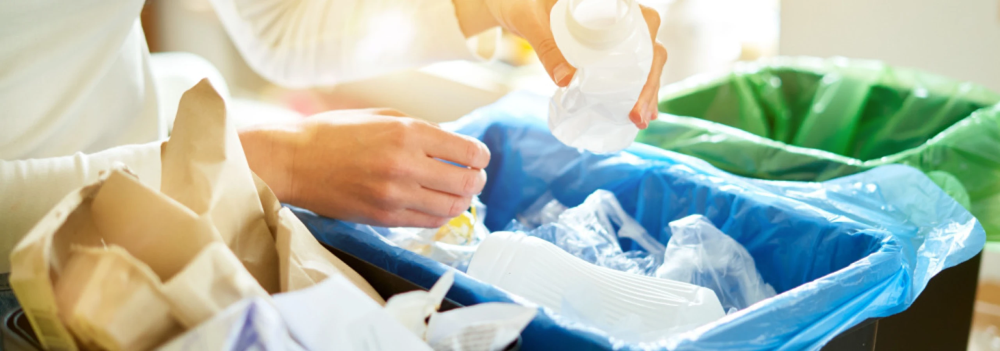

Wednesday , 21 Agu 2024
Reimagining Waste: The Future of Sustainable Plastic Packaging
In a world increasingly aware of environmental concerns, transforming discarded plastics into sustainable packaging solutions is not just a vision—it's a necessity. The concept of reimagining waste involves taking materials like PET, polypropylene, and other plastics and repurposing them into new, high-quality products. This approach not only diverts waste from landfills but also reduces the demand for virgin materials, thus lowering our collective environmental footprint.
PET, or polyethylene terephthalate, is a common plastic found in bottles and containers. By recycling PET, manufacturers can create new packaging materials without the need for new plastic production, which is both energy-intensive and resource-draining. Similarly, polypropylene, used in everything from food containers to automotive parts, can be recycled and given a second life, reducing the need for new plastic and conserving valuable resources.
The vision of a circular economy in plastic packaging involves closing the loop: collecting discarded plastics, processing them into new products, and reintroducing them into the manufacturing cycle. This not only helps in minimizing waste but also fosters innovation in packaging design. Companies are now developing advanced technologies to enhance the recycling process, making it more efficient and effective.
In this evolving landscape, the future of sustainable plastic packaging lies in our ability to reimagine and repurpose waste. By embracing this approach, we can move towards a more sustainable and environmentally responsible future.